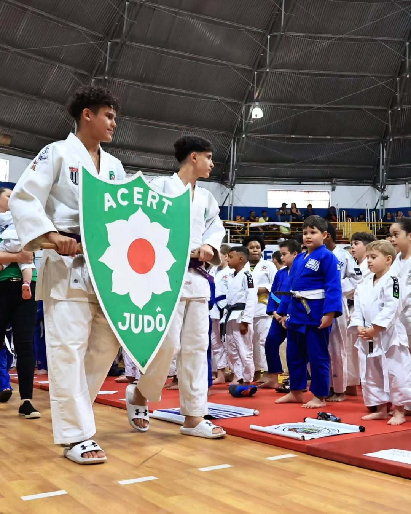
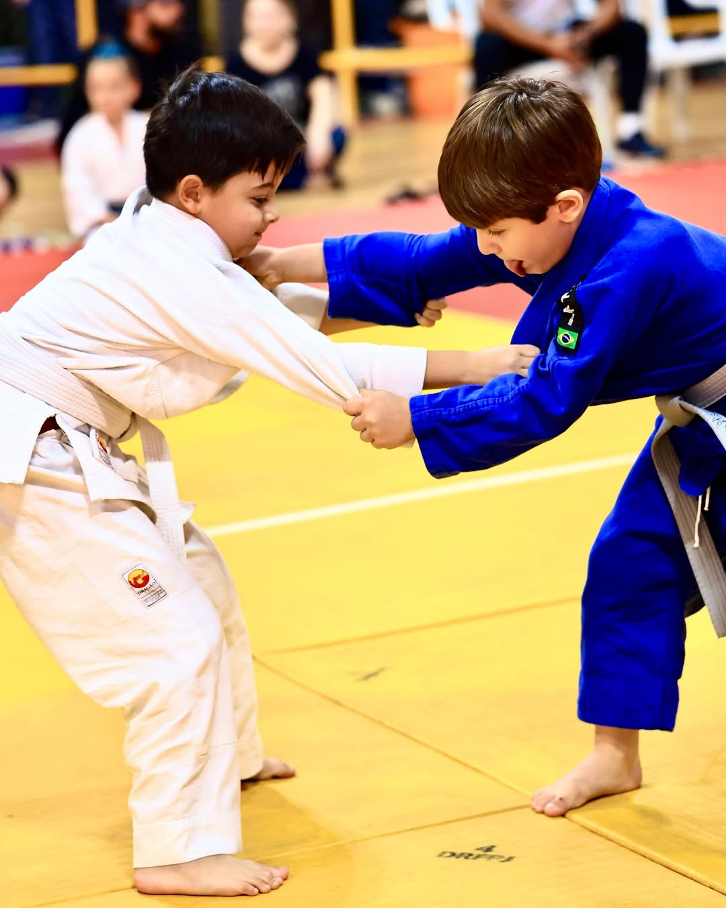

Departamento de Judô
O Caminho Suave: Mais que um Esporte, uma Filosofia de Vida
O Judô (柔道), que significa "Caminho Suave", é uma arte marcial japonesa moderna, criada por Jigoro Kano em 1882. Em nosso dojo, ensinamos não apenas as técnicas de projeção, imobilização e chaves, mas também os princípios fundamentais de respeito, disciplina e autoaperfeiçoamento que formam o caráter de um verdadeiro judoca.
Nossa Filosofia
Seguimos os dois pilares deixados pelo mestre Kano:
- Seiryoku Zen'yo (精力善用): Máxima eficiência com o mínimo de esforço.
- Jita Kyoei (自他共栄): Bem-estar e benefícios mútuos para todos.
Estes princípios são aplicados tanto no tatame quanto na vida, ensinando nossos alunos a se tornarem cidadãos melhores.

Benefícios do Judô
A prática regular do judô vai muito além da defesa pessoal. Ela desenvolve:
- Coordenação Motora e Equilíbrio: Através de movimentos complexos e quedas seguras (ukemi).
- Disciplina e Foco: O respeito às regras, aos colegas e ao sensei é fundamental.
- Confiança e Autoestima: Superar desafios e aprender novas técnicas fortalece o indivídu-o.
- Respeito e Empatia: A prática com diferentes parceiros ensina a cuidar do próximo.

Turmas e Horários
Nossas turmas são divididas por faixa etária para garantir um aprendizado seguro e adequado para cada aluno.
- Judô Infantil (5 a 8 anos): Terças e Quintas, 18:00 - 19:00
- Juvenil (9 a 14 anos): Terças e Quintas, 19:15 - 20:15
- Adultos (A partir de 15 anos): Segundas, Quartas e Sextas, 19:30 - 21:00
Faça uma Aula Experimental!
A melhor forma de conhecer o Judô é no tatame. Entre em contato e agende uma aula experimental gratuita. Venha fazer parte da nossa família!
Agende sua Aula